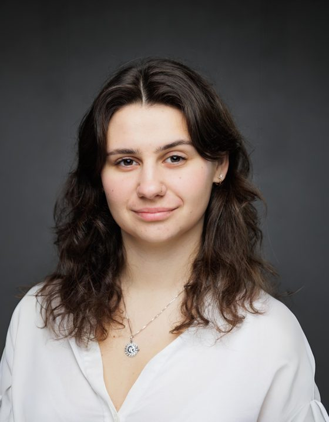
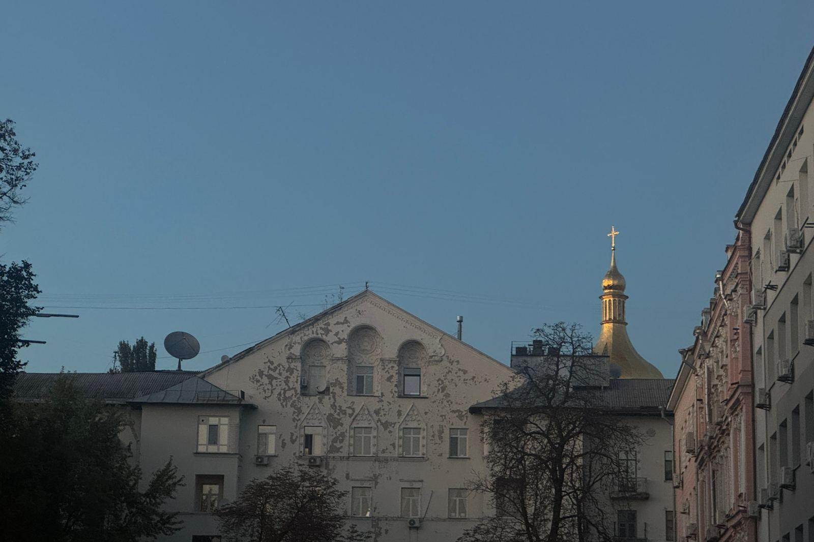
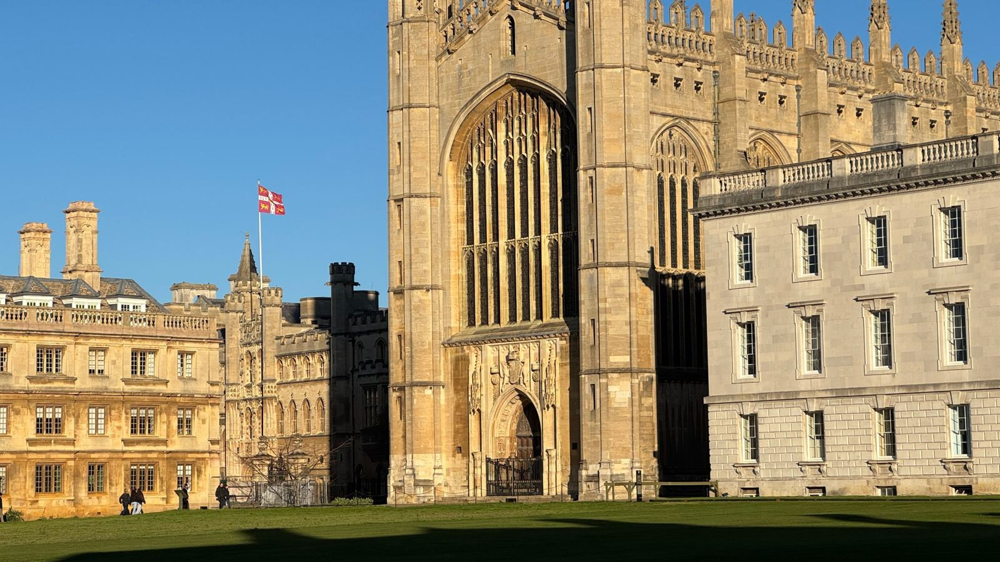
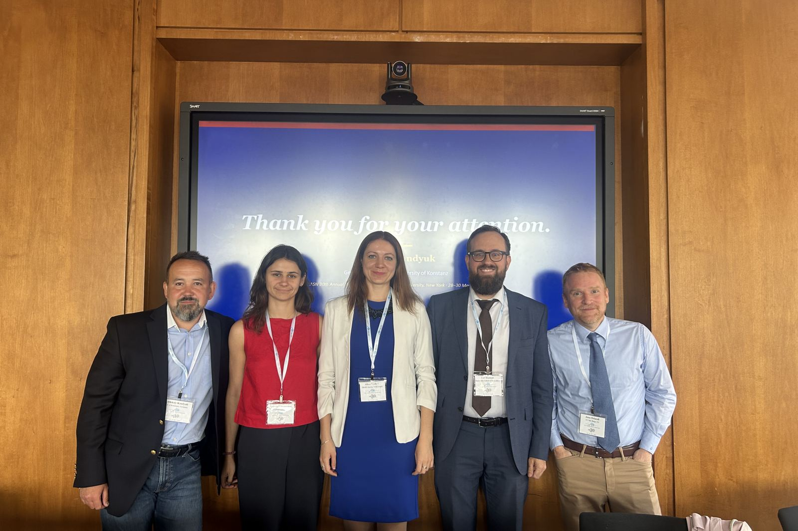
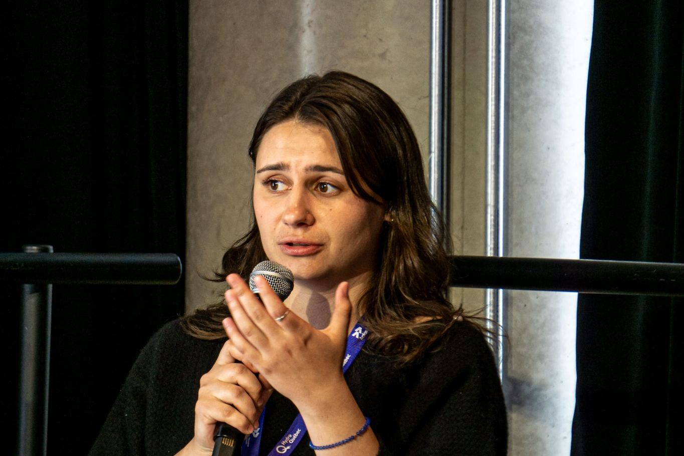
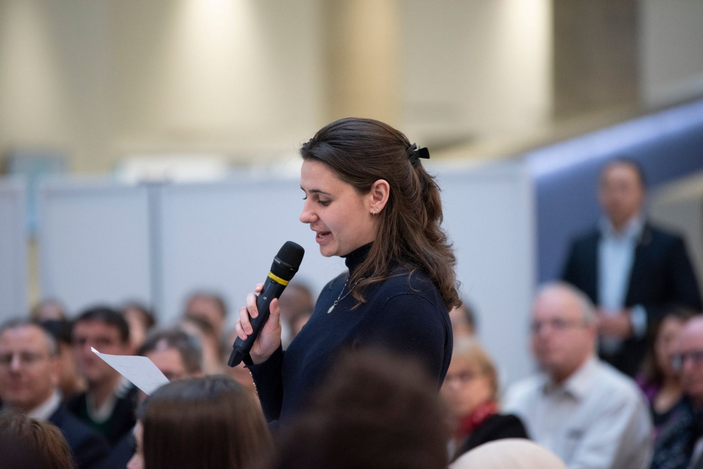
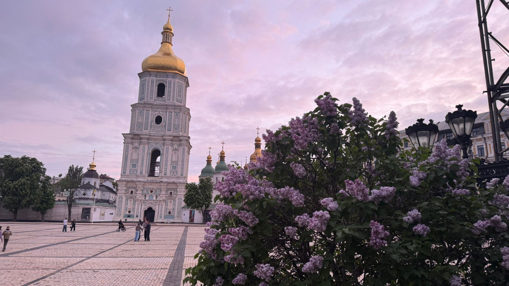
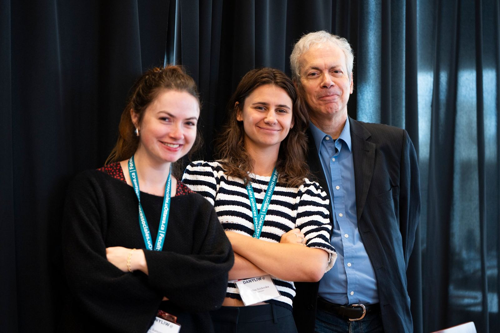

Political science · Ukraine & Europe
Katerina Sviderska
Political scientist working on EU integration and enlargement, nationalism, political violence and security in Ukraine and Eastern Europe.

- Currently
- PhD candidate, King's College, Cambridge
Biography
I am a Gates Cambridge Scholar and PhD candidate in Politics and International Studies at King's College, University of Cambridge. My dissertation, Europeanisation before Europe: Ukraine's Path from Aspiration to Recognition, traces how Ukraine pursued European integration long before the EU recognised it as a candidate. My doctorate is also funded by the Fonds de recherche du Québec.
My wider research covers nationalism and identity politics, including in de facto states, political violence and memory politics, and security and defence. I hold an M.Sc. in Political Science from the Université de Montréal, where my thesis on Russian historiography and genocide in Ukraine received the 2025 Jenson-Pétry Prize for the best master's thesis in Québec.
I teach as a Visiting Lecturer at the Kyiv School of Economics, and in 2025–2026 I was a supervisor in Comparative Politics at Cambridge. I am an Associate Fellow of the Chair of Ukrainian Studies at the University of Ottawa, a researcher at the Royal Military College Saint-Jean, and Assistant Director of the Association for the Study of Nationalities convention.
Outside academia, I work as a fixer in Ukraine for Le Devoir and Libération, and I write regularly for La Presse, The Hill Times and other outlets. I work in English, French, Ukrainian, Russian and Italian.

Contact
Curriculum vitae
CV
Education
- 2024 – Present
PhD, Politics and International Studies, University of Cambridge
King’s College. Dissertation: Europeanisation before Europe: Ukraine’s Path from Aspiration to Recognition. Gates Cambridge Scholarship.
- 2022 – 2024
MSc, Political Science, Université de Montréal
With distinction. Jenson-Pétry Prize for the best master’s thesis in Québec.
- 2019 – 2022
BSc, International Studies, Université de Montréal
With distinction. Semester abroad at Sciences Po Paris.
Academic appointments
- 2026 – Present
Visiting Lecturer, Kyiv School of Economics
Nations and Nationalisms in Europe, MA in Public Policy and Governance.
- 2025 – 2026
Supervisor (Associate Lecturer), University of Cambridge
Comparative Politics, POLIS.
- 2024 – 2025
Visiting Graduate Research Trainee, McGill University
Jean Monnet Centre for European Studies.
- 2022 – Present
Associate Fellow, University of Ottawa
Chair of Ukrainian Studies.
- 2021 – 2024
Teaching Assistant, Université de Montréal
Eight courses on international studies, Eurasian politics, armed conflict and nationalism.
Research experience
- 2026 – Present
Research Assistant, McGill University
Elections in Eastern Europe.
- 2025 – Present
Researcher, Royal Military College Saint-Jean
- 2022 – 2025
Research Assistant, Université de Montréal
De facto states.
- 2023
Student Fellow, Concordia University
Montreal Institute for Genocide and Human Rights Studies.
- 2021 – 2022
Research Assistant, CÉRIUM
Contestation in Russia.
- 2020 – 2022
Research Assistant, Université de Montréal
Foreign military training.
Scholarships and honours
- 2025 – 2029
Doctoral Research Scholarship
Fonds de recherche du Québec.
- 2025
Jenson-Pétry Prize
Best master’s thesis in Québec, Société québécoise de science politique.
- 2025
Doctoral Award
Canadian Centennial Scholarship Fund.
- 2024 – 2028
Gates Cambridge Scholarship
University of Cambridge.
- 2024
Québec finalist, Rhodes Scholarship
University of Oxford.
- 2024
Berthelet-Aubin Foundation Scholarship
Université de Montréal.
- 2024
Édouard-Montpetit-Manuvie Excellence Scholarship
Université de Montréal.
- 2023 – 2024
Master’s Research Scholarship
Fonds de recherche du Québec.
- 2021
Young MINDS Targeted Engagement Grant
Department of National Defence of Canada.
Research
What I work on

European integration and enlargement
My doctoral dissertation, Europeanisation before Europe: Ukraine's Path from Aspiration to Recognition, studies how the European Union became a political question in Ukraine, and how Ukraine's sense of belonging to Europe changed over time. I examine when and how the EU was politicised in Ukrainian politics.
The project uses mixed methods. I combine LLM-assisted text analysis of speeches in the Verkhovna Rada with qualitative research based on interviews.
Nationalism
I work on nation-building and identity politics, with a particular interest in de facto states. I study how these entities build and narrate their identity, and how they manage relations with their partners, including in the context of EU enlargement towards Moldova and Georgia. I have written on memory politics in Abkhazia, through local memories of nineteenth-century deportations and their effect on attitudes towards Russia.
Political violence and memory politics
I study extreme violence and ethnic conflict, and how states narrate the past to make such violence possible. My master's thesis linked Russian historiography to genocidal violence in Ukraine and won the 2025 Jenson-Pétry Prize for the best master's thesis in Québec.
Security and defence
Two projects make up this strand. I examine the "human safari" in Kherson, where Russian drones hunt civilians, and conceptualise it as a form of violence grounded in dehumanisation.
At the Royal Military College Saint-Jean, I study the institutional preparedness of Ukraine's reserve forces and the civic resistance that grew around them.

Publications
Papers and reviews
Peer-reviewed
- 2026
Dembińska, Magdalena, and Katerina Sviderska. "Russia, Friend or Foe? Uneasy Memories of Nineteenth-Century Deportations in Abkhazia."
Europe-Asia Studies, 1–21. doi.org/10.1080/09668136.2026.2668614
- 2024
Sviderska, Katerina. Review of Varieties of Nationalism: Communities, Narratives, Identities, by Harris Mylonas and Maya Tudor.
Politique et Sociétés 43, no. 2. doi.org/10.7202/1114888ar
Reports
- 2026
Comité intersectoriel étudiant. Rapport sur l'intégration de la relève internationale en recherche.
Fonds de recherche du Québec. Report lead. Read the report (PDF, in French)
Working papers
- R&R
Dembińska, Magdalena, and Katerina Sviderska. "Moldova, Georgia and the EU Enlargement, With or Without De Facto States? Strategic Hedging in Liminal Transnistria and Abkhazia."
Revise and resubmit, International Politics.
- Draft
Sviderska, Katerina. "Ukraine's Reserve Forces Under Fire: Institutional Preparedness and Civic Resistance."
- Draft
Hook, Kristina, and Katerina Sviderska. "Conceptualizing 'Human Safari' Tactics as a Form of Dehumanization-Based Violence."
Media
Commentary and press

Written
- 2026
« Quatre années qui ont conduit à l'impasse » (with Dominique Arel)
La Presse, 24 February.
- 2025
“What Liberal Mark Carney’s Election Win in Canada Means for Europe” (with Léandre Benoit)
The Conversation.
- 2025
« Prévenir un Munich 2025 » (with Dominique Arel)
La Presse, 24 February.
- 2024
“For Ukraine, We Need Solidarity between Ottawa and Brussels”
The Hill Times, 6 November.
- 2024
« Deux ans de guerre en Ukraine : la liberté ou la mort »
La Presse, 21 February.
- 2023
« Le Canada doit soutenir l’intégration de l’Ukraine dans l’OTAN »
Le Devoir, 11 July.
- 2023
“Canada Must Support Ukraine’s NATO Integration”
The Hill Times, 10 July.
- 2023
« Destruction du barrage de Kakhovka : qui ne dit mot consent »
La Presse, 9 June.
- 2023
« Ukraine : entre génocide et natiocide »
La Presse, 1 May.
- 2023
« Les enfants ukrainiens, trophées de guerre russes »
La Presse, 22 March.
- 2023
“The Womanly Face of the War in Ukraine”
Toronto Star, 10 March.
- 2023
« Manifestations en Géorgie : il a toujours été question de l’Europe »
La Presse, 10 March.
- 2023
« La guerre a un visage de femme »
La Presse, 22 February.
Television
- 2023
« La visite du président Zelensky au Canada »
Radio-Canada Information, 24/60 with Anne-Marie Dussault and Téléjournal with Patrice Roy, 22 September.
- 2023
« 365 jours de la guerre en Ukraine »
Radio-Canada Information, 24/60 with Anne-Marie Dussault, 23 February.
Radio
- 2025
« La détermination des Ukrainiens ne faiblit pas »
107,7 FM, L’Estrie aujourd’hui with Steve Roy, 5 March.
- 2023
« La visite du président Zelensky au Canada »
98,5 FM, Le Québec maintenant with Patrick Lagacé, 22 September.
- 2023
« Kidnapping d’enfants ukrainiens »
98,5 FM, Le Québec maintenant with Patrick Lagacé, 23 March.
- 2023
« Violence sexuelle et viols des femmes en Ukraine »
98,5 FM, Le Québec maintenant with Patrick Lagacé, 23 February.
Podcasts
- 2026
« Quatre ans de guerre en Ukraine. Mythes de masse à violence de masse »
Conversations on Genocide, February.
- 2023
“Katerina Sviderska: Living and Studying the War”
Curriculum.
- 2023
“One Year: How Ukrainian Civil Society Continues to Resist”
Human Rights Talks.
Press interviews
- 2022
« Libération de Kherson : on avait raison d’avoir espoir »
Journal Métro, 11 November.
- 2022
« Les étudiants ukrainiens de Sciences Po racontent leur guerre à distance »
Émile, Sciences Po, 31 March.
- 2022
« Sanctions réclamées contre un professeur pro-russe »
La Presse, 27 March.

Public talks
- 2025
"Memorialization Policies and Challenges in Ukraine"
Roundtable, ASN World Convention, New York.
- 2025
« Comment entretenir la flamme aux cycles supérieurs ? »
Congrès de l'Acfas, Montréal.
- 2023
Talks on the Russian invasion, memory and genocide
Centre d'études sur la paix et la sécurité internationale (CEPSI), January and November; École nationale d'administration publique, June.
Projects
Beyond academia

Fixing in Ukraine
Since 2024 I have worked as a local fixer for Le Devoir and Libération: checking sources, finding witnesses, liaising with authorities and organising reporting on the ground.
- En Ukraine, les civils de Kherson vivent dans l’enfer des drones tueurs russes · Le Devoir, November 2024
- Kherson se résigne à vivre malgré le feu nourri russe · Le Devoir, November 2024
- Les orphelins de Malioutka, récit d’un rapt d’enfants ukrainiens à grande échelle · Le Devoir, November 2024
- Les Ukrainiens se sentent trahis par les États-Unis de Donald Trump · Le Devoir, February 2025
The Skrynia Initiative
From 2023 to 2026 I coordinated the Skrynia Initiative at The Shadows Project. We raised funds and delivered humanitarian aid to museums across Ukraine, in Kharkiv, Sumy, Kyiv, Kherson, Odesa and Lviv, supplying protective materials so that their collections could be kept safe from shelling.
International researchers in Québec
As a member of the Intersectoral Student Committee of the Fonds de recherche du Québec, I led the committee's 2026 report on how international graduate students and postdoctoral researchers integrate into Québec's research system. Since 2024, provincial and federal rules on their arrival and stay have changed quickly, and international enrolment in Québec universities fell sharply in autumn 2025.
The report draws on a review of academic and grey literature, interviews with people across the university sector, and five focus groups with about 75 participants at the 2025 Journées de la relève en recherche. It identifies five groups of obstacles: policy and regulation, administration and immigration, finances, supervision, and social integration. From these it sets out 13 recommendations to the FRQ and universities, among them adapting scholarship applications, reducing financial barriers, recognising intercultural supervision, supporting scientific French and strengthening mental health resources.
Academic service
I have been part of the organising team of the Association for the Study of Nationalities (ASN) World Convention, held at the Harriman Institute, Columbia University, since 2023, and its Assistant Director since 2024.
Since 2025 I have co-coordinated the Danyliw Seminar on Contemporary Ukraine, hosted by the Chair of Ukrainian Studies at the University of Ottawa.

Mentoring
Since 2019 I have mentored students on admissions to the Université de Montréal and Cambridge, grant applications, careers, and research and writing.